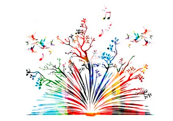

About Me
I am a student at UMSI pursuing a Bachelor of Science in Information with a minor in entrepreneurship. Developing my programming skills has been an intriguing journey. I am heavily interested in the UI/UX side of things. I had the opportunity to work as part of the core team for an accelerator type startup known as Maximize. Here, I was able to help gather and synthesize information for UI/UX processes to help deliver a high quality user experience. Gaining hands on experience through this, I noticed how important UI/UX is for the simplest of things. Since then, I enjoy learning about programming, design, and the human-technology interactions.
I enjoy learning about a multitude of aspects such as technology, sustainable action, complex issues within society, and other entrepreneurial endeavors including startups, marketing, and networking. With the help of mentors and programs, such as optiMize and Dare to Dream at ZLI. Since then, I have initiated my own project, Bambú, that revolves around sustainability and humanity due to the environmental and social pressure highlighted in the year 2020.
Besides business, I really enjoy spending time with my family and friends. Being in nature is always fun for me. Cooking is something I enjoy, even if it's a new recipe. Overall, if I'm not working on a project, I like to prepare myself for developing new lifelong skills. Whether it includes doing some research, listening to audiobooks, or even writing down ideas, I always like thinking ahead.
